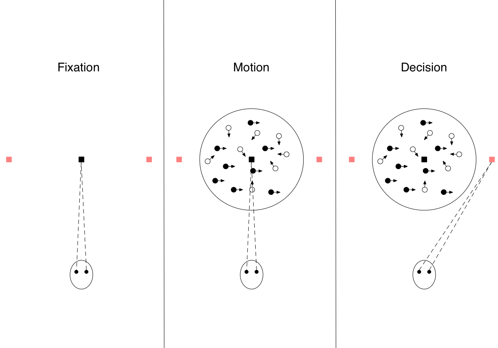

The neural basis of simple decisions¶
Austin Brotman & Kyler Presho
We encounter perceptual decisions every day. Is this shirt red or orange? Which direction is that bird flying? Am I driving faster or slower than the car in front of me? Generally, they are answers to the question “What state of the world is most consistent with what my senses perceive?” As simple as this question might seem, understanding how the brain arrives at an answer has been an important area of research for understanding the neuroscience of judgement and decision making. Beneath the surface are questions about how the brain represents, integrates, and utilizes uncertain information filtered through the nervous system. Efforts on this front have uncovered probable mechanisms facilitating information representation, evidence accumulation, and termination of decisions in several areas of the brain, as well as theoretical models of how perceptual decisions are made.
To better illustrate the decision making process, we will contextualize the course of a perceptual decision with an experimental scenario frequently used to investigate the phenomenon: the direction discrimination task. A participant (often a monkey) is positioned in front of a cluster of moving dots. The movement of a subset of the dots is correlated, while the remainder move randomly. The participant is trained to judge which direction the correlated set of dots is moving and indicate their decision via eye movement. During the experiment, researchers are able to record neural activity from the agent’s brain. An advantage to this experimental design is that researchers can vary the uncertainty of the environmental stimulus. They do so by varying the strength with which the dots’ movement is correlated. Additionally, they can model non-binary decisions by expanding the number of directions the dots are able to move. We will reference this scenario as we outline a decision’s underlying representation and interpretation, the process of integrating information, and termination.
Caption: Examples of moving dot stimuli at different correlation levels. Arrows indicate motion. Correlated and uncorrelated dots are distinguished for the purposes of this example.

Caption: Stages of the motion discrimination task. First, the subject fixates on a fixation point. Next, the moving dot stimulus is displayed around the fixation point. Finally, the participant indicates a decision by directing an eye movement to one of the targets.
Representation of Information
Regardless of the stage of the decision making process, it is important to understand the way neural activity represents information. The most commonly examined metric for neural activity is firing rate. In the case of a single neuron, this is straightforward. Neurons in the middle temporal lobe (MT or V5), for example, are selective for motion in a particular direction along with the speed of that motion. When dots within the neuron’s receptive field appear to be moving in its preferred direction, the firing rate of the neuron will increase. As the motion appears to orient in a direction progressively further from that which the neuron selects for, its firing rate will decrease. This is especially evident as the correlation of the moving dots is increased. The information coded by these single neurons can, impressively, be highly indicative of the subject’s decision. The earliest work on perceptual decision making, Newsome, Britton, and Movshon (Newsome et al., 1989) analyzed recordings from single neurons in MT. They found that the recordings taken from individual neurons (selected for responsiveness to motion) were comparable in accuracy to the actual choices of the monkeys studied. Salzman et al. (1990) then found that altering neural firing rates of MT columns using microstimulation significantly and reliably pushes the distribution of decisions towards that column’s preferred direction. While the application area of this stimulation extends beyond a single neuron, evidence suggests the additional neurons activated are functionally similar to the target. This implies that the information represented by these neural firing rates is causally connected to the subject’s perceptual decision.
In the previously mentioned studies as well as other literature, the activity levels of single neurons are strikingly predictive of subjects’ decisions (as well as the relationship between difficulty and performance). The brain has access to a number of these signals and most likely pools their inputs to form a decision. This raises an important question: if the brain has access to highly predictive signals, why isn’t actual decision performance noticeably better than that of individual neurons? Work by Britten et al. (1992) suggests that pooling uncorrelated neural signals should substantially increase the accuracy of decisions. As pools grow larger, the pooling of noisy inputs should allow better detection of weak signals. This, however, would contradict observed data showing that single neurons perform as well as decision makers. Based on this contradiction, they conclude that decisions must be made using a small number of independent signals, or a larger pool of correlated signals. Zohary et al. (1994) found a weak correlation among pooled neurons and established that this shared variability asymptotically limits the improvement offered by pooling the noisy neural signals. In light of these limits, decision performance similar to that of individual neurons is an expected consequence of pooling neurons for the perceptual decisions we discuss.
There is good reason to think this pooling of neurons offers important benefits for perceptual decisions. Rather than having to rely on a sufficiently large number of spikes to occur in any one neuron, estimating the density of spikes across the pool allows for a faster approximation of firing rate. Furthermore, collecting from a pool allows an estimation of spike rate even during gaps in a single neuron’s spikes (Shadlen and Kiani, 2013). This is clearly desirable given the time sensitive nature of many perceptual decisions.
Interpretation as a Decision Variable
One important way of interpreting the neural dynamics discussed above is by transformation into a decision variable (DV). This is a quantity over which the brain can apply a decision rule between two options, A and B. As the DV’s value increases, so does the support for option A as opposed to B (or vice versa) under the decision rule. It is not the decision itself, but a representation of accumulated evidence. Its neural correlates may be found in different parts of the brain depending on the kind of decision at hand, and its formation involves a transformation from the raw activations.
In the context of our motion discrimination task, constructing the DV often involves applying a transformation to averaged activations of pools neurons. Area MT, for example, makes use of comparison and integration. These are the subtraction of different pools of competing neurons and the accumulation of their activations over time, respectively. Comparison allows us to quantify the degree of belief and integration allows us to understand processing over timescales longer than an individual perceptual event as noted in Shadlen and Kiani (2013).
Studies of the lateral intraparietal cortex (LIP) bear out the existence of these transformations. Shadlen and Newsome (1996) suggests a subset of directionally sensitive neurons within LIP encode information that is neither a direct encoding of sensory information, nor directly responsible for moving a subject’s eyes. Instead, the firing rates of these neurons in area LIP seem to reflect the slow integration of incoming sensory information, rising in proportion to the strength of the motion signal in the preferred direction (coherence in our motion discrimination task). This activity has been interpreted as evidence that neurons in area LIP act as information accumulators, though literature on the subject is mixed. Microstimulation of the areas in question has shown indications that LIP activity causally affect decision performance by Hanks, Ditterich, and Shadlen (2006). These conclusions are complicated, however, by findings from Katz et al. (2016) showing that inactivation of the same areas does not affect task performance. It remains unclear whether activity in area LIP is causally related to direction descrimination, or how significant its contribution might be if so.
This highlights an important consideration when analyzing neural correlates: signals that seem highly correlated with the decision performance of a subject may be byproducts rather than causes of the eventual decision.
Evidence Accumulation
A crucial factor in decision making is the ability to evaluate the relevant evidence at-hand in order to make the best perceived decision. Experimental data from Kiani & Shadlen (2009) shows that as time passes and agents are exposed to greater amounts of pertinent evidence, the DV trends further toward one decision threshold or another until one boundary is crossed. However, this process is not quite so simple, as the duration of the time it takes to make a decision can extend beyond the natural integration time for sensory receptors (resources for gathering evidence). This suggests that evidence accumulation is not the only factor taken into account in the decision making process before termination is achieved. Time, for example, may play a role when evidence is incomplete or slowly received. There is multi-trial evidence to suggest that accumulation is better represented by a gradual change in neural activity along the lines of Kiani & Shadlen’s integration models than a sudden change in brain state. The pattern of gradual accumulation visible when averaging multiple trials, though, must be balanced with observations from Latimer et al. (2016) that individual neurons may progress through step-like changes during single trials. One exception to gradual accumulation may be in situations where the agent has a change of mind; in this case, observations of neural activity tend to show rapid brain state changes (inverting the direction of the DV) consistent with what one might expect from such an event.
In order to account for both the amount of time and information accumulated towards making a decision, a number of theoretical models have been developed in recent decades. Of these, the predictions from sequential sampling models have been especially effective at matching experimental data. These models characterize the process of making a decision as a noisy accumulation of evidence from a starting point that terminates upon reaching a response criteria. Two examples are the Drift Diffusion Model (Ratcliff and McCoon, 2008) and the Leaky Competitive Accumulator Model (Usher and McClelland, 2001).
Termination
Finally, a decision in progress must terminate to be realized as a decision. Functioning as the stopping rule based on relevant evidence and/or time, termination occurs after a decision variable reaches or crosses a certain threshold. In other words, once an agent is exposed to the necessary amount of relevant information or given enough time to make a decision, neural signals reach a level of activation that allows the decision-making process to end (terminate).
Behavioral data produced by Shadlen & Kiani (2013) appears to support this threshold-based theory of termination as well. In an experiment focused on using eye movement as decision-making criteria, they show evidence of an expected increased firing rate in the LIP immediately preceding eye movement (the decision being made). When the participants (monkeys, in this case) decided to make the choice handled by the observed section of the LIP, the activation presumably passed an activation level or threshold that led to the actual decision being made–but when the monkeys chose the other available option, this threshold was not crossed in that same area.
This mechanism, although simple, is essential to the decision-making process. It allows an agent to take their interpretation of the DV, time, and accumulated evidence and produce an actual decision or action. Without setting a threshold for neural activation, there would be no reason for the brain to stop evaluating new data and as such may never come to make an actual decision.
References
Newsome, W. T., Britten, K. H. & Movshon, J. A. (1989). Neuronal correlates of a perceptual decision. Nature, 341(6237):52–54. https://doi.org/10.1038/341052a0.C.
Salzman, D., Britten, K. H., & Newsome, W. T. (1990). Cortical microstimulation influences perceptual judgements of motion direction. Nature, 346(6280):174–177. https://doi.org/10.1038/346174a0.
Britten, K.H., Shadlen, M. N., Newsome, W. T., & Movshon, J. A. (1992). The analysis of visual motion: a comparison of neuronal and psychophysical performance. Journal of Neuroscience, 12(12):4745–4765. https://www.jneurosci.org/content/12/12/4745.
Zohary, E., Shadlen, M. N., & Newsome, W. T. (1994). Correlated neuronal discharge rate and its implications for psychophysical performance. Nature, 370(6485):140–143. https://doi.org/10.1038/370140a0.
Hanks, T. D., Ditterich, J., & Shadlen, M. N. (2006). Microstimulation of macaque area LIP affects decision-making in a motion discrimination task. Nature neuroscience, 9(5), 682–689. https://doi.org/10.1038/nn1683
Katz, L. N., Yates, J. L., Pillow, J. W., & Huk, A. C. (2016). Dissociated functional significance of decision-related activity in the primate dorsal stream. Nature, 535(7611), 285–288. https://doi.org/10.1038/nature18617
Shadlen, M. N., & Kiani, R. (2013). Decision making as a window on cognition. Neuron, 80(3):791–806. https://doi.org/10.1016/j.neuron
Shadlen, M. N. & Newsome, W. T. (1996). Motion perception: seeing and deciding. Proceedings of the National Academy of Sciences, 93(2):628–633. https://www.pnas.org/content/93/2/628.
Kiani, R., & Shadlen, M. (2009). Representation of Confidence Associated with a Decision by Neurons in the Parietal Cortex. Science, 324(5928), 759–764.
Latimer, K., Yates, J., Meister, M., Huk, A., & Pillow, J. (2015). Single-trial spike trains in parietal cortex reveal discrete steps during decision-making. Science, 349(6244), 184–187.
Ratcliff, R., & McKoon, G. (2008). The Diffusion Decision Model: Theory and Data for Two-Choice Decision Tasks. Neural Computation, 20 (4): 873–922. https://doi.org/10.1162/neco.2008.12-06-420
Usher, M., & McClelland, J. L. (2001). The time course of perceptual choice: The leaky, competing accumulator model. Psychological Review, 108(3):550-592. 10.1037/0033-295X.108.3.550